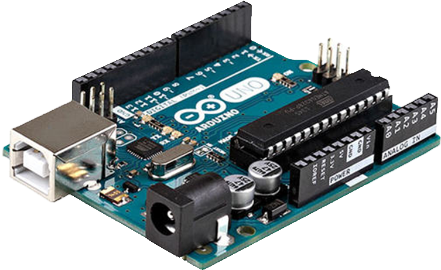
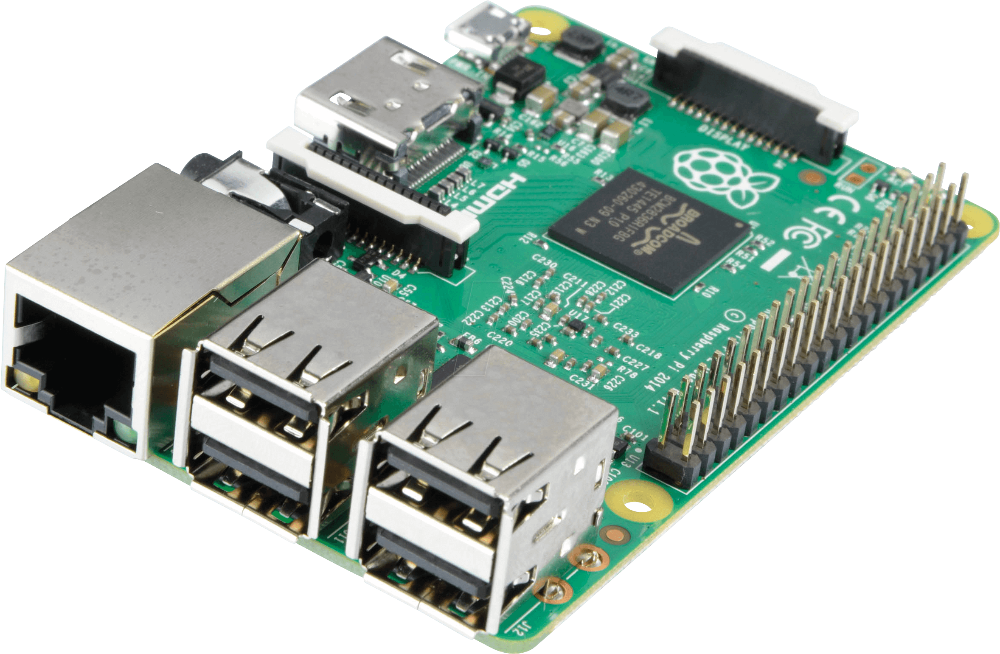

Arduino, RPI és társai
Arduino
Nyílt forráskódú elektronikai fejlesztőplatform
Széles tömegek számára elérhető, mivel olcsó, könnyen programozható és csatlakoztatható más eszközökhöz.
A fejlesztésre szükségünk van egy IDE-ra és egy Arduino Board-ra

Raspberry Pi
Bankkártya méretű egykártyás számítógép, amelyet oktatási célokra fejlesztettek
A gép különböző linux-disztribúciókkal működtethető
Több felhasználási lehetőség, mint az Arduino board-oknál
Található rajta HDMI port, USB portok, Ethernet csatlakozó / Wifi, jack csatlakozó
Ára: 73 € (RPi 4, 4GB RAM)

... és a többi
| ASUS Tinker Board |
150 € |
| Libre Computer Board |
45 € |
| Odroid N2+ |
139 € |
| RPi Computer Module |
35 € |
Források: Arduino (kép), Raspberry (kép)